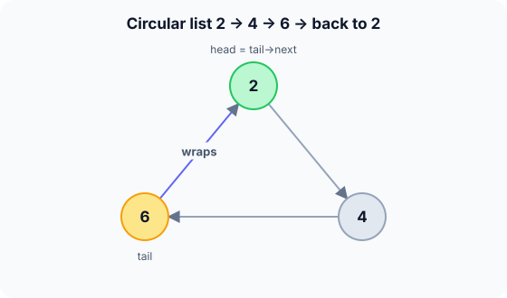

Prerequisites
- Singly linked list.
- Pointers and the
do … whileloop. - Modular thinking: after the last item comes the first.
The analogy
Everyday analogy
Think of children sitting in a circle passing a ball. After the last child, the ball goes back to the first; there is no "end" of the circle.
A circular linked list is that circle. The last node points back to the first, so walking forward never falls off the end. You just need to remember where you started.
How it works
Start with a sequence of operations by hand
Start empty and call insert_end with 2, then 4, then 6. The function returns the new tail. Predict, then open "Check".
Example: predict before you read
Step 1. insert_end(2) on an empty list. Predict: where does the new node's next point?
Check
To itself. A one-node circle is a node pointing to itself, and it is both head and tail.
Step 2. Cover the next line and guess: after insert_end(4), what does 4 point to, and what is tail?
Check
4 points to the head, 2; the old tail 2 now points to 4; and tail moves to 4. The circle is 2 → 4 → 2.
Step 3. insert_end(6). Predict the circle and where tail->next leads.
Check
2 → 4 → 6 → 2. tail is 6 and tail->next is 2, the head.

Quick recall: Before reading further, cover the text above and say out loud: why is keeping a tail pointer enough to reach both ends?
Check your answer
Because the tail's next is the head, so one pointer gives you the last node and, one step later, the first.
Finish the picture: taking turns
Three players sit in the circle 2 → 4 → 6. The first turn goes to the head, 2, and each turn moves to next.
- Turns 1 to 3. Predict who plays.
Check
2, then 4, then 6.
- Turn 7. Predict who plays, without listing every turn.
Check
Every 3 turns the circle repeats, and 7 = 2 × 3 + 1, so turn 7 is like turn 1: player 2.
Quick recall: Without scrolling up, say out loud: how does a traversal of a circular list know when to stop?
Check your answer
It stops when it comes back to the node it started from, since there is no NULL to detect.
The rule in plain words
The last node's next points to the first node, and you keep a pointer to the tail; the head is tail->next.
To traverse, start at the head and stop when you get back to it. An empty list is a NULL tail; a single node points to itself.
Quick recall: Before you read the code, write the steps of insert_end in your own words. Then check below.
Check your answer
1. Make the new node. 2. If the list is empty, point it at itself. 3. Otherwise point it at the head, point the old tail at it, and make it the new tail.
The code
Read this code after you have built the circle by hand. It will make more sense.
typedef struct Node { int val; struct Node *next; } Node;
Node *insert_end(Node *tail, int v) { /* returns the new tail */
Node *n = malloc(sizeof(Node));
n->val = v;
if (tail == NULL) { n->next = n; return n; } /* one node: points to itself */
n->next = tail->next; /* new node points to the head */
tail->next = n;
return n; /* new node is the new tail */
}int count_nodes(Node *tail) {
if (tail == NULL) return 0;
int c = 0;
Node *p = tail->next; /* start at the head */
do { c++; p = p->next; } while (p != tail->next); /* until back at the head */
return c;
}Definition
What you just did, in one line: a circular linked list is a linked list whose last node points back to the first, usually accessed through a tail pointer.
flowchart LR
T["tail"] --> C["6"]
A["2 (head)"] --> B["4"]
B --> C
C --> A
insert_end(8), which node does 8 point to, and which node points to 8? (Answer: 8 points to 2; 6 points to 8, and 8 becomes the tail.)How fast is it?
Quick recall: Before looking at the table, predict: what does adding at the front cost with only a tail pointer?
Check your answer
$O(1)$: link the new node after the tail, but keep the tail where it is, so the new node becomes the head.
In a circle of $n$ players, the player whose turn it is on turn $t$ (counting from 1) is at position:
$$(t - 1) \bmod n$$For our circle, turn 7 gives $(7-1) \bmod 3 = 0$, the head. Each turn itself is one $O(1)$ step along next.
| Operation | Cost | Why |
|---|---|---|
| Insert at the end | $O(1)$ | Link after the tail, move the tail |
| Insert at the front | $O(1)$ | Link after the tail, keep the tail |
| Remove the front | $O(1)$ | tail->next = head->next |
| Move to the next turn | $O(1)$ | Follow one pointer |
| Search / count | $O(n)$ | Walk once around the circle |
Warning
A loop like while (p != NULL) never ends on a circular list. Always stop when you return to the start node, and handle the empty list (tail == NULL) first.
Exam tip
Know the two edge cases: empty list (tail is NULL) and one node (it points to itself). Also know why a do … while loop fits: the start node must be counted before the "back at start" test.
Common mistakes
- Using
while (p != NULL)and looping forever. - Using
while (p != head)withpstarting at the head, which stops before counting anything. - Forgetting that a single node must point to itself.
Try it yourself
Exercise 1 (warm-up)
In the circle 2 → 4 → 6 (tail on 6), how do you add 0 at the front?
Hint
Link it in exactly where insert_end would, but don't move the tail.
Answer
0 points to 2, 6 points to 0, and the tail stays on 6. The head (tail->next) is now 0: 0 → 2 → 4 → 6 → 0.
Exercise 2 (a bit harder)
Five people sit in a circle numbered 1 to 5. Starting at 1, every second person leaves (2 leaves first, then 4, …). Who is the last one left? Write your answer down before you open it.
Show answer
2 leaves, then 4, then 1, then 5; the last one left is 3. This is the Josephus problem, and a circular list simulates it directly: each removal is $O(1)$ once you're at the right node.
Did you know?
Did you know?
Operating systems use circular lists for round-robin scheduling: each running program gets a short time slice, then the scheduler moves to next, forever.
Circular buffers, music playlists on repeat and multiplayer turn order all use the same "no end, wrap to the start" idea.
Key points to remember
If you remember one thing from each line, remember the because.
- One tail pointer is enough because the head is always
tail->next. - Both ends are $O(1)$ to add to because they meet at the tail's link.
- Traversal must stop at the start node because there is no
NULLat the end. - A single node points to itself because it is both the first and the last node.
- It suits round-robin because moving to the next turn never needs a special case at the end.
Self-check questions
Answer these in order, out loud. They follow the page, so your answers become the script of your video.
- How is a circular linked list like children passing a ball in a circle?
Sample answer
After the last child the ball goes back to the first, so there is no end. The last node points back to the first in the same way.
- Walk through building the circle with insert_end(2), (4), (6).
Sample answer
2 points to itself; 4 is linked after 2 and points back to 2; 6 is linked after 4 and points to 2. The tail ends on 6, and tail->next is 2.
- Why does
count_nodesuse ado … whileloop?A good answer says when the stop test happens.
Sample answer
The loop starts at the head, which is also where it must stop. A
whileloop would test "back at the head?" before counting anything and stop immediately;do … whilecounts first, then tests. - So what is a circular linked list, in one sentence?
Sample answer
A linked list whose last node points back to the first, usually reached through a tail pointer.
- Why keep a pointer to the tail rather than the head?
A good answer covers both ends.
Sample answer
From the tail you reach the head in one step, so both ends are $O(1)$. From the head alone, reaching the tail would take a full walk.
- What do the main operations cost?
Sample answer
Insert at either end, remove the front and move to the next turn are $O(1)$; search and counting are $O(n)$.
- Where are circular lists used in practice?
Sample answer
Round-robin CPU scheduling, turn order in games, and playlists on repeat: anything that cycles through items forever.
- If you had to teach this to a friend in 2 minutes, what would you leave out, and why?
Sample answer
I'd leave out the Josephus problem and the turn formula. I'd keep the circle analogy, building 2 → 4 → 6 → 2, and "tail pointer gives both ends in $O(1)$, stop when back at the start".
External resources
- GeeksforGeeks: Circular linked list: insertion, deletion and traversal with code.
- Wikipedia: Circular linked list: where it fits among list variants.
- Wikipedia: Round-robin scheduling: the classic real-world use.
Videos
- YouTube search: circular linked list explained: pick a short walkthrough.